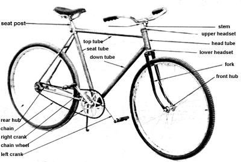
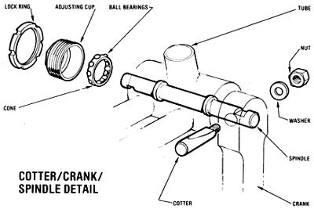

Issue # 76 - July/August 1982
Here's a practical, from-the-ground-up solution to the high cost of getting from here to there.
A lot of people think of bicycles as either toys or (in these days of fancy ten-or more!-speed roadriders) status symbols . . . but a bike can provide a convenient, efficient, and downright practical means of basic transportation. The members of my family, for example, make all their short tripsfrom half-mile jaunts to the post office to three-mile "milk runs" to the nearest dairy farm-by pedal power.
Of course, those of you who've recently priced two-wheeled errand-runners know that the cost of new machines can be formidable: Even most ordinary one-speed coaster bikes start at around $100 these days! Well, I've got good news for you. Bicycles that are bought to serve as toys tend to be used up and discarded like toys . . . and there are thousands of good thrown-away frames and parts just waiting to be pieced together and pedaled off. I think you'll find it surprisingly easy to scrounge up those components from junkyards-as I did-and construct a fine, functioning bike for no more than $10!
CHOOSING YOUR WHEELS
I suggest that for your first effort, at least, you build a simple one-speed cycle. Sure, the low gear of a three-speeder can be helpful when you're climbing hills, but such units are generally more complicated to work on than are the old reliable coaster bikes (and more expensive . . . you'd probably have to spend at least $8.00 on new brake and gear cables and a shifter, since such components tend to rust quickly).
If you decide to tackle a one-speed cycle, try to start with either Bendix or Komet wheels, since they're so common that you can easily find replacements for any defective hub parts. And whichever brand name you dig up, look for 26" X 1-3/8" British EM wheels. (The measurement applies to the inflated tire. The rim will be about 23-3/4" X 1-1/8".) Wider units might not fit inside your bike frame. (Avoid the harderto-replace Schwinn 26" EA1 wheels unless they already have good tires.)
TOOLS FOR THE JOB
Bike rebuilding is a pretty simple task, and requires only basic tools: a hammer, a screwdriver, a pair of pliers (preferably slipjoint), and an adjustable wrench. Furthermore, in order to clean rusty or grimy parts you'll need some No. 30 oil, grease, steel wool, rags, kerosene or diesel fuel, and an old toothbrush. And if you plan to dress up the frame, you'll want sandpaper, paint, and a brush.
A few other tools can be helpful but shouldn't prove absolutely necessary. Penetrating oil and a homemade punch (see Photo 6), for instance, will ease the job of freeing any "frozen" parts. And a low-cost spoke wrench for tightening loose spoke nipples, a thin bicycle wrench for the removal of pedals, and a small cone wrench to adjust the front wheel bearings would all come in handy.
One last "tool" is essential for work on English bikes: a block of wood with a 3/8" hole drilled near one end. This homemade device will help you knock out the cotters that fasten British pedal cranks onto the body of the cycle.
THE ESSENCE OF BIKE BUILDING
I figure the easiest way to explain the bicycle construction process is with pictures, so I'm going to use a sequence of photos to lead you through the procedure. In essence, you'll [a] select the components . . . [b] dismantle almost everything and tidy up the frame . . . [c] clean the moving parts . . . [d] replace any defective pieces . . . [e] reassemble the "overhauled" components . . . and [f] fix any wobbles or projecting spokes in the wheels.
Building a "junk" bicycle is a bit like cooking with leftovers: You may have to bend the recipe to fit the ingredients at hand. So despite the fact that I've tried to make my instructions as detailed as possible, you'll probably have to do a bit of "creative cookery".
And don't let any complicated-sounding jargon you encounter in my directions worry you. Bike rebuilding is a lot easier done than said. Bicycles are really marvelously simple in design (when you stay away from those ten-speed derailleurs and all) and are therefore quite easy to work on. Just remember the sequence of pieces when you take something apart . . . so you can reverse the order to put it back together. It's my guess that-even if you've never assembled anything more complicated than a twopiece curtain rod-you'll soon be a master cycle recycler.
Now, let's get started.
THE PARTS
Photo 1: The Naming of Parts. Although you can figure out what the bike pieces do by looking at them, I can't talk about them without naming them, using the terms given in this photo. The sections that you'll need to dismantle-which are all detailed in the accompanying drawings-are the stem and fork (they both fit into the head tube), the entire crank unit, and the front wheel hub. The complicated rear hub contains the brake-and gears, too, on a three-speed-so it's best to avoid trouble by starting with a healthy back wheel.
By the way, the bike you see here is an $8.00 international junk classic. It has an American frame, an English front wheel, a German rear hub, a Japanese stem, and a Dutch handlebar!
CHOOSING YOUR BIKE
Photo 2: The Frame. The bicycle's structural base is its frame. Diamond-shaped English bike skeletons (from the once popular "English racers") are among the best frames to use because they're strong, lightweight, and easy to find. Be sure to sight along each member of any "diamond" you mine from a trashpile or junkyard . . . to see whether it's straight. You might want to measure the wheelbase, as well: If the distance between the hub slots on a standard English frame (with a 21 " seat tube) is less than 41-1/2", you've got a bent bike.
TAKING THE BICYCLE APART
Photo 3: The Stem and Fork. The first step in overhauling a bike is to disassemble the vehicle down to its bare frame . . . beginning with the front stem and fork. You won't have to use a hacksaw to handle this task-as I'm doing in the photo-unless your stem is "frozen" into the fork. In that case you saw the stem off, knock the fork out, and find some new front parts.
Normally, though, you'll simply loosen the bolt at the top of the stem (about three turns), tap the bolt head down, and pull the handlebars and stem off the bike. To take the fork out, put some newspaper on the floor-to catch any small, loose parts-and remove the lock nut, washers, adjusting cup, cone, and ball bearings from the upper headset. You can then pull the fork out . . . along with the lower bearings and cup (if you have to knock any ball-bearing cups out with a screwdriver, they'll need to be replaced).
You'll also remove the bicycle's chain about now, and replace-by using a punch to knock the rivets out over the hole of a large nut-any bad chain links . . . or simply find a better chain.
Photo 4: The American One-Part Crank. T he crank unit on most American-made bikes consists of a bent one-piece rod that holds both pedals. To remove it, first unscrew the left pedal, left lock nut, washer, and adjacent slotted adjusting cone (all these parts are left-threaded to keep them from loosening while you're pedaling . . . so they'll unscrew clockwise). Then take out the ball-bearing cup and slide the entire crank and sprocketed chain wheel off the right side.
Photo 5: The English Crank Rods. English cranks have three pieces: two pedal rods and a connecting spindle. The rods are held on by tapered cotters. To disassemble them, take the nut and washer off each pin . . . then support the crank on your homemade cotter-catching block and drive the pin out.
Photo 6: The English Crank Spindle. After the cranks are disconnected, you'll have to take the spindle out. To do this, first loosen the left side lock ring with slip-joint pliers. (A tight ring can be knocked loose-as is being done in the photo-with a punch made from the shaft of an old English bike pedal.) Then take off the ring, the adjusting cup with bearings (again, spread some newspaper on your work surface first), and the spindle. You can remove the right ballbearing cup-but do so only if it's pitted and needs to be replaced-by turning it clockwise.
Whether you have an American or an English crank unit, you'll need to oil your bike pedals. You can also use a very thin wrench to remove either of the foot-holders, should it need replacement. Remember: The left pedal has left-handed threads.
CLEANING TIME
Photo 7: Painting the Frame. Now that you're down to the bare bones of your bike, you can sand off the old chipped paint and give the frame a new undercoat and finish layer. I've found that regular brush-on enamel works best.
Photo 8: Cleaning the Components. Wash off all the moving parts, using a toothbrush or rag dipped in kerosene. (The pieces pictured here are the bearings, left cup, lock ring, and crank spindle from an English bicycle.) After you've cleaned the bike's chain with kerosene, dip it in 30- or 40-weight oil and hang it up to drip dry.
Photo 9: Cleaning the Chrome. Remove any rust from your bike's chromed parts with fine steel wool dipped in solvent. (If you've salvaged and plan to use hand brakes, however, don't polish the sides of your wheel rims.)
REASSEMBLY
Photo 10: Greasing the Bearings. After everything's clean-and any chipped, pitted, or worn-out rings, balls, cones, or cups have been replaced with parts from a bike shop, industrial bearing supply company, or another used cycle-you can start putting the bicycle back together. Pack the loose ball bearings into a ring of grease in the cups. (If you lose some of the bearings, simply add enough to fill the cup, then take one out.)
Photo 11: Reinstalling the American Crank. The general rule for reassembling any units containing bearings is as follows: Tighten the bearing-covering cups (or cones) until they're snug, and then loosen them about one quarter-turn . . . so that the unit rotates freely with little or no side play. Remember that on an American bike you adjust the left crank side by pushing the slotted cone counterclockwise to tighten and clockwise to loosen.
Photo 12: Reinstalling the English Crank.
On an English crankshaft, hold the cup steady with a nail while you tighten the outer lock ring. If the ball-bearing holder slips during final tightening, you can use the nail as a punch to loosen it.
Support the cranks with your homemade block again when you drive the cotters back in . . . and set the two pins facing opposite directions (each rounded cotter head will face the back of the bike when a pedal's at the bottom of its stroke).
Photo 13: Reinstalling the Fork. When you're ready to put the fork back in the headset tube, install the lower bearings first. Then hold the fork snug against the front frame tube while you place the bearings in the upper cone and screw on the top cup. After that's done, you can reattach the stem and handlebars.
WHEEL WORK
Photo 14: The Hubs. Remove all the parts in the front wheel's hub. Then clean, grease, and reassemble them. The front axle pictured here is American, and its bearings are held by retainers. Some English front axles have no outside lock nuts. The cones on such wheels have to fit the fork snugly if they're to be held securely in place.
Remember, I recommend that you not tinker with a rear wheel hub (except to tighten or loosen the bearing cup) . . . just test to see that it spins freely-counterclockwise-and smoothly before you take it home.
Photo 15: Truing the Wheel. If a wheel has some minor wobbles, bolt it into the fork and turn the frame upside down. Then hold a marker against the fork at a point about 1/8 inch from the rim and rotate the wheel slowly . . . the warps will mark themselves. Check the other side of the rim in the same way. Now, to correct the wobbles, loosen four or five spokes a half-turn on the same side as, and surrounding, a mark . . . and tighten the corresponding four or five spokes on the opposite side. Repeat the procedure for each warp until the wheel runs fairly true.
At this point you should also file smooth any spoke ends that poke out of the rim nipples. Then cover all the spoke holders with duct tape or a rubber rim-liner strip . . . so that the nipples can't puncture your inner tube later on.
FINISHING UP AND PEDALING OFF
After you've done all your overhauling chores, the only work left is to put on the tires and fill the tubes with air (you can, of course, reupholster the seat or add a useful carrier basket if you wish). Then you'll be all set to pedal off on your brand-new junk bike.
If your experience is anything like mine, you'll be amazed how simple-and how much fun-bike rebuilding is. And if the members of your family are anything like mine, you'll probably have to make a "junker clunker" for each one of them! Of course, I didn't mind doing so, because now the folks in my house never have to fret about having some "wheels" to take them where they want to go. In fact, we don't even worry about how we'll get around when the next gas crunch hits. The government can do as it likes with gasoline . . . nobody rations pedal power!
EDITOR'S NOTE: An excellent addition to any pedaler's library is Coaster & 3-Speed Bicycle Repair by the XYZYX Information Corporation. You can order a copy for $4.95 plus $1.50 shipping and handling-from Crown Publishers Retail Sales, Dept. TMEN, 1 Park Avenue, New York, New York 10016.
You can make your cycle construction and maintenance even easier by first building "MOTHER's Bike Service Stand" (issue 75, page 100). See page 104 to order back issues.
|
 |
 |
|